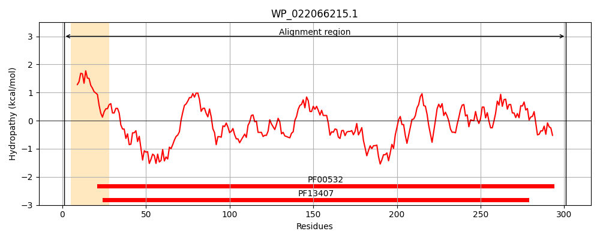
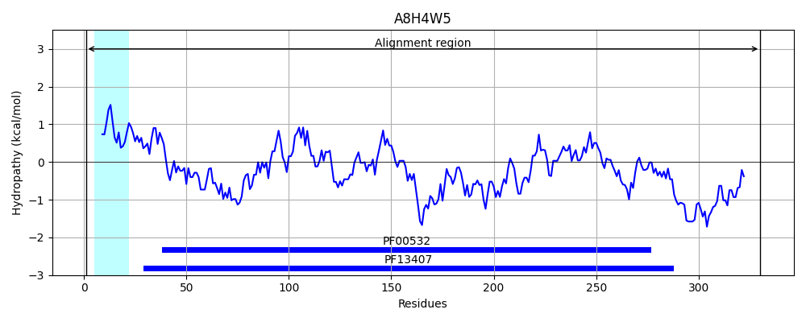
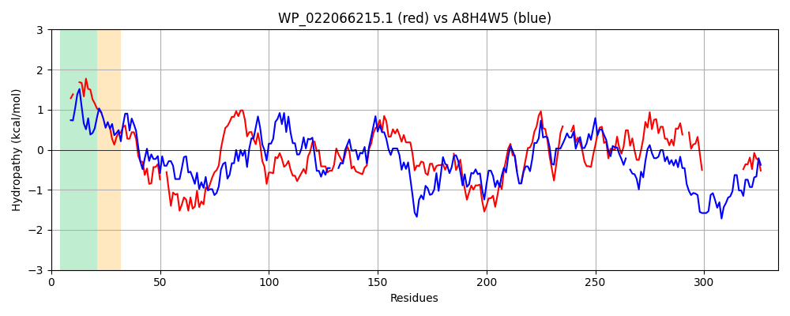

Hit Accession: A8H4W5
Hit TCID: 3.A.1.2.15
Hit Description: gnl|BL_ORD_ID|801 gnl|TC-DB|A8H4W5|3.A.1.2.15 Periplasmic binding protein/LacI transcriptional regulator OS=Shewanella pealeana (strain ATCC 700345 / ANG-SQ1) GN=Spea_2282 PE=4 SV=1
Mach Len: 334
e:0.000000
Query TMS Count : 1
Hit TMS Count: 1
TMS-Overlap Score: 0.900000
Predicted Substrates:CHEBI:10078;xylitol
BLAST Alignment:
Score: 337 , Bit scores: 134 bits, E-value: 4.6e-37, Alignment length: 334, Percentage identity: 33
Query: 1 MKHCKIILLVG--LLASSASALAE---KIGVSMAYFDQNFLTIIRQSIEKE--ARARHVDVQFEDARGDTGRQADQVQSFIASGVDAIIVDPVDSASTPQLTKMAQQAKMPLVYVNRTPGDKTLPPGVVFVGSDERESGTLQMEALAKLASYKGNVAIMIGNLTDAGALQRTKDVEQVVAKYP--AMKVVQKQPANYSRSEGMDLMQNWTGNGEA-IDIVAANNDEMAIGAAMALE---KSQKKLLIGGIDATPDGLKALASDKIQVTVFQDAVGQGKTALAVALKLIKGE--KVESHVW------------------IPFELVTKENMQTYVE 301
MK I L+G L SS +A A+ KI V M F+ +++Q+ ++ V + D R D Q +Q ++ I + DAII++P+D + + MA A +P++ N + VV SD+ E G L+ + + + KGNV I+ G +G +QR + E+ +A+ P A+KV++++ AN+SR+EGM LM+NW + I V NDEMA+GA A+E S +I GID D L A+ SDK+ ++ QDA GQ + ++ VAL+ I GE K S VW IP+ +V ++N+ +E
Sbjct: 1 MKKTIISTLLGSTLALSSGAAFAKDDIKIAVLMYGMKAEFVQLMQQAAYDHPLVKSGEVKITMYDGRYDALVQNNQAETAIRTNHDAIIINPMDFDANIDVVDMANDAGIPVIVTNARLNTDQMTAEVV---SDDVEGGYLEAKFIMEQIGCKGNVVILEGPKGGSGEIQRGQGNEKAIAECPEGAVKVLERKTANWSRAEGMTLMENWLMKHQGKISGVIGQNDEMALGAIEAIEGTGDSVDNYVIAGIDGVTDALHAVKSDKM-TSILQDANGQMQGSIDVALRHIIGEQYKPTSKVWQQYADQLNWNNGLSKRYDIPWTVVNQQNVDKLLE 330 | Protein Hydropathy Plots: |
|---|
|  |  |
Pairwise Alignment-Hydropathy Plot:
|
|---|
|  |